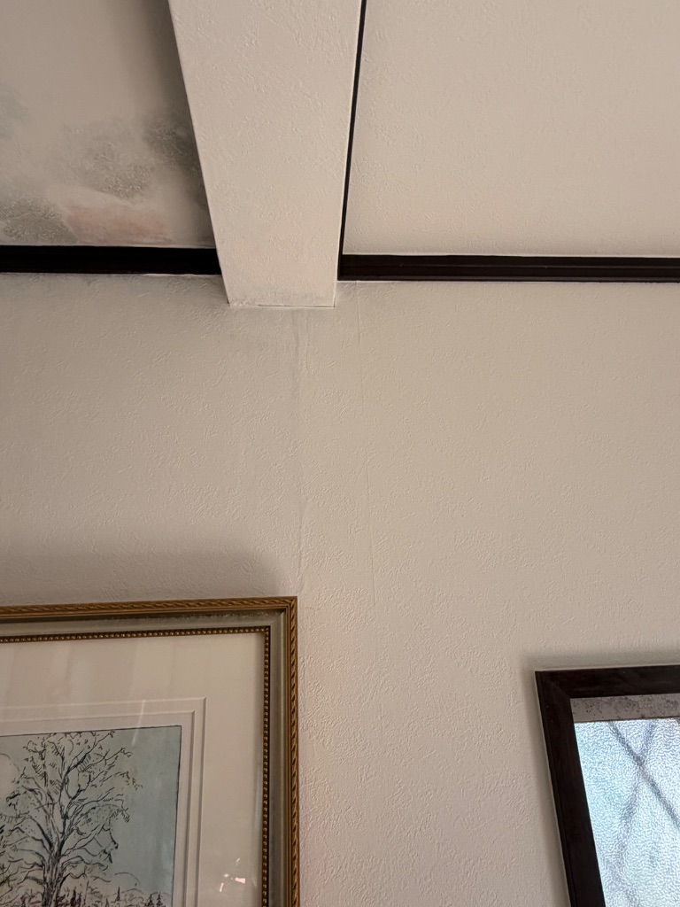

町田市で屋根葺き替え工事！瓦を剥がしたら…😱
木部がかなりダメになってたけど、気付けて良かった！地域の人みんな仲良しで和やか✨
今日は町田市で
屋根の葺き替え工事をしてきた。
瓦を剥がしてみたら…
うわっ、これヤバい😱

※ 瓦を剥がしたら木部がかなりダメになってました😰
🏚️ 瓦を剥がしたら…
瓦を剥がしたら、
木部がかなりダメになってた。
腐食が進んでて、
これは雨漏りしてるな…と思って、
急遽ご自宅の中を拝見させて頂いた。
やはり雨漏れが起きていて、、、
天井にもシミができてました😰

※ ご自宅の天井にも雨漏りのシミが…
✨ でも気付けて良かった！
かなり木部がダメになってしまったけど、
それでも気付いた事が良かった！
もっと遅かったら、
もっと大変なことになってたかもしれない。
今、気付けて本当に良かった✨
これからしっかり修理して、
安心して住めるようにします💪
👥 地域の人みんな仲良しすぎてびっくり！
今回のお客様、
地域の人にずっと話しかけてて、
みんな仲良し地域すぎてびっくりした😊
近所の人が通りかかったら、
「おはよう！」「こんにちは！」って
みんな声をかけ合ってる。
「この辺の人はみんな仲良しなんですよ〜」
って言ってたけど、
本当にその通りで、
なんかほっこりした☺️
工事中も、近所の人が
「大変そうだね〜」とか
「頑張ってね！」とか
声をかけてくれて、
すごく温かい地域だなって思った。
こういう地域って最高だよね✨
みんなで支え合ってる感じが良い。
💪 これからしっかり修理します
今回の工事、
予想以上にダメージが大きかったけど、
気付けて良かった。
これからしっかり修理して、
お客様が安心して住めるようにします💪
お客様にも喜んでもらえるように、
丁寧に仕上げます✨
地域のみなさんも温かくて、
すごく良い雰囲気の中で工事できた😊
また明日も頑張ろう！
完成が楽しみです🏠